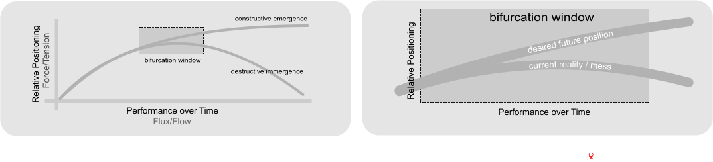

Towards a Sense of Urgency
[http://www.fastcompany.com/58870/business-30By 2030, more than one in three human beings will not have enough to drink, or will run the risk of dying by drinking what they've got. Today, the prospect of such scarcity is causing countries to mine so-called fossil water from deep aquifers that were formed millions of years ago. Parts of India are pumping water at twice the recharge rate, causing water tables to fall between one and three meters per year. But there's not much of an alternative: If India gave up groundwater mining, its grain production would likely fall by 25%, leaving it incapable of feeding itself. Nobody knows precisely how long this can continue, but the answer will be measured in decades, not centuries. It's little wonder that the World Bank says freshwater scarcity may well become one of the major factors limiting development in the years ahead.
Organised Agriculture (OA) as a System
Apart form the Conclusions all the inserts below taken from http://www.eoht.info/page/Adriaan+de+Lange
“Let me then give a quick summary of "free energy" F as I understand it presently. Every system, material or mental, has patterns in it. When these patterns are considered together, I think that they can be called the system's organisation. The entropy S of the system is a measure of the system's organisation, irrespective of the kinds of patterns (order or chaos, structure or process, microscopic or macroscopic). The system's organisation cannot change without its entropy S changing too. [At de Lange op cit]
The first major difference between the two is that in Clasical Thermodynamics the focus is on "entropy S" as a picture whereas in Irreversible Thermodynamics the focus is on "entropy production ΔS" as a movie. The second major difference is that in CT entropy is interpreted as chaos whereas in IT the causes and consequences of entropy production ΔS get attention rather than trying to interpret it.”
Conclusion: Organised Agriculture is a movie and in movies there are changes from frame to frame. The change is there because entropy is produced or more precisely increased.
"The reason is that entropy is increased (created) by what I prefer to call "entropic" (rather than thermodynamic) "force-flux pairs". These entropic force-flux pairs emerge when some forms of energy are converted into different forms of energy. Every form of energy may have its own entropic force-flux pair."
"Every form of energy may be expressed by the product XY of an extensive quantity X and an intensive quantity Y. When any system is scaled in size, all its extensive quantities X get scaled while all its intensive quantities Y remain the same. Differences in the values of an extensive quantity X is an entropic flux while differences in the values of an intensive quantity Y is an entropic force."
Conclusion: Organised Agriculture circa 2014 may be much larger (budget, members etc) than it was in 1984 but the culture (the rules of how things are done) may not have changed at all.
"All the forms of energy of a system together is called its "total energy E". Some of this total energy E is bound into maintaining the systems present organisation, among others even those forms of energy! The rest of the total energy E is called the system's free energy F. Since it is not bound to keep up the system's organisation, it is readily available to drive the transformation in energy forms of the system and hence the associated entropy production ΔS."
Conclusion: Almost all the energy in the OA system is used currently to to maintain the systems current form of organisation.
"Scientists have identified four criteria which, if met, will allow an open system to locally reduce entropy and increase order and organization within the system. People who rely on the "open system" argument need to acknowledge and understand that open systems are a necessary but by themselves insufficient requirement for complexity. Four Requirements for Complexity (Biological or Otherwise) in a System:
- 1. System Must Be Open [Openess & Fruitfulness]
- 2. An Adequate Energy Supply Must be Available[Spareness & Otherness]
- 3. Energy Conversion Tools/Mechanisms[Sureness & Wholeness]
- 4. Blueprint/Template/Control System Must Exist to Organize Converted Energy[Liveness]
. Ilya Progigine has shown that massive "entropy production" by means of "force-flux" pairs are responsible for the emergence of new orders. The emergences happen at the "edge of chaos" through so-called bifurcations. A bifurcation may be described as a"forking breaking point" when the system cannot handle the "entropy production" in terms of its present orders and the chaos in them. The bifurcation can result into either a constructive emergence to a higher order or a destructive immergence to a lower order. In a complex system may bifurcations can appear at the edge of chaos. Some of them will quickly result into emergences while others will slowly result into immergences. [At de Lange - on file]
Conclusion: OA emergence or immergence?
The MESS at the edge of Chaos
What decision-makers deal with, I maintain, are messes not problems. This is hardly illuminating, however, unless I make more explicit what I mean by a mess. A mess is a set of external conditions that produces dissatisfaction. It can be conceptualized as a system of problems in the same sense in which a physical body can be conceptualized as a system of atoms - Russell Ackoff 1974
- (a) A problem or an opportunity is an ultimate element abstracted from a mess. Ultimate elements are necessarily abstractions that cannot be observed.
- (b) Problems, even as abstract mental constructs, do not exist in isolation, although it is possible to isolate them conceptually. The same is true of opportunities. A mess may comprise both problems and opportunities. What is a problem for one person may be an opportunity for another -thus a problem can be an opportunity from another perspective.
- (c) The improvement to a mess – whatever it may be – is not the simple sum of the solutions to the problems or opportunities that are or can be extracted from it. No mess can be solved by solving each of its component problems/opportunities independently of the others because no mess can be decomposed into independent components.
- (d) Simple situations do exist that can be improved by extracting one problem from them and solving it. These are called difficulties and they are seen as exceptions rather than the norm in terms of decisions that are needed in environmental, organisational and other information-related contexts.
- (e) The attempt to deal with a system of problems and opportunities as a system – synthetically, as a whole – is an essential skill of a systems practitioner. [Russell Ackoff 1974]
- Conclusion: For every mess there is a contrasting desired future position that resolves the mess; even if it is not seen or understood.
- Conclusion: Tension arises between every mess and its constrasting DFP
- Conclusion: The tension or force creates the energy gradient required to take the system forward. The force is necessary to do so but not sufficient.
- Conclusion: The longer the transition from the current reality to the DFP is delayed the more difficult it becomes until you exit the window of opportunity; after which the switch becomes impossible.
- Conclusion:The problem with an earlier switch - although easier - is that it seems implausible or even counter-intuitive to most observers.